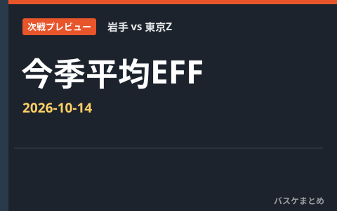

岩手 vs 東京Z 次戦プレビュー｜ポジション別・今季通算EFF

2026年10月14日 19:05 JST予定。B.ONE 2026-27 レギュラーシーズンの公式通算EFFで、両チームの現在登録選手を比較します。
現在の登録は当日のエントリー・出場確定を意味しません。出場情報を確認できない選手は「出場未確認」と表示します。各ポジション上位3人を表示します。同点で3人目に並ぶ選手も掲載します。複数ポジションは各表へ掲載し、同値は同順位とします。
PG｜今季通算EFF
表は横にスクロールできます。出場状況もご確認ください。
| 順位 | 選手（所属） | 通算EFF | 出場試合数 | 出場状況 |
|---|---|---|---|---|
| 1 | 喜志永 修斗（東京Z） | 64 | 6 | 出場未確認 |
| 2 | 石川 晴道（岩手） | 36 | 6 | 出場未確認 |
| 3 | 関屋 心（岩手） | 30 | 6 | 出場未確認 |
SG｜今季通算EFF
表は横にスクロールできます。出場状況もご確認ください。
| 順位 | 選手（所属） | 通算EFF | 出場試合数 | 出場状況 |
|---|---|---|---|---|
| 1 | 後藤 翔平（岩手） | 28 | 6 | 出場未確認 |
| 2 | 佐伯 崚介（岩手） | 25 | 6 | 出場未確認 |
| 3 | 中村 ジャズ（岩手） | 18 | 6 | 出場未確認 |
SF｜今季通算EFF
表は横にスクロールできます。出場状況もご確認ください。
| 順位 | 選手（所属） | 通算EFF | 出場試合数 | 出場状況 |
|---|---|---|---|---|
| 1 | ノア・ガーリー（岩手） | 106 | 6 | 出場未確認 |
| 2 | サミュエル・イドウ（東京Z） | 97 | 6 | 出場未確認 |
| 3 | ジェイミー・マロンゾ（東京Z） | 63 | 6 | 出場未確認 |
PF｜今季通算EFF
表は横にスクロールできます。出場状況もご確認ください。
| 順位 | 選手（所属） | 通算EFF | 出場試合数 | 出場状況 |
|---|---|---|---|---|
| 1 | アルナルド・トロ（岩手） | 153 | 6 | 出場未確認 |
| 2 | ノア・ガーリー（岩手） | 106 | 6 | 出場未確認 |
| 3 | ブラントン・チャットフィールド（東京Z） | 103 | 6 | 出場未確認 |
C｜今季通算EFF
表は横にスクロールできます。出場状況もご確認ください。
| 順位 | 選手（所属） | 通算EFF | 出場試合数 | 出場状況 |
|---|---|---|---|---|
| 1 | アルナルド・トロ（岩手） | 153 | 6 | 出場未確認 |
| 2 | ジェイコブ・ポラコヴィッチ（岩手） | 138 | 6 | 出場未確認 |
| 3 | ブラントン・チャットフィールド（東京Z） | 103 | 6 | 出場未確認 |
欠場情報・ランキング対象外
- 臼井 弘樹（岩手）：通算記録未確認。
- 田中 晴大（東京Z）：通算記録未確認。
- 吉田 健太郎（東京Z）：通算記録未確認。
通算EFFは公式の合計列を使用し、平均EFF×試合数では計算しません。移籍選手は同一リーグの公式TOTALが確認できた場合に採用し、所属別記録と二重加算しません。
出典：B.LEAGUE公式
公式試合詳細（取得 2026-10-13 23:07 JST）
公式用語集・EFF定義（取得時刻未記録）
公式スタッツ（今季合計・EFF）（取得 2026-10-13 23:08 JST）
公式インジュアリーリスト（取得 2026-10-13 23:07 JST）
公式クラブ登録選手一覧（取得 2026-10-13 23:08 JST）
公式クラブ登録選手一覧（取得 2026-10-13 23:08 JST）
公式記録・発表は訂正される場合があります。出場は保証されません。最新情報は公式サイトをご確認ください。